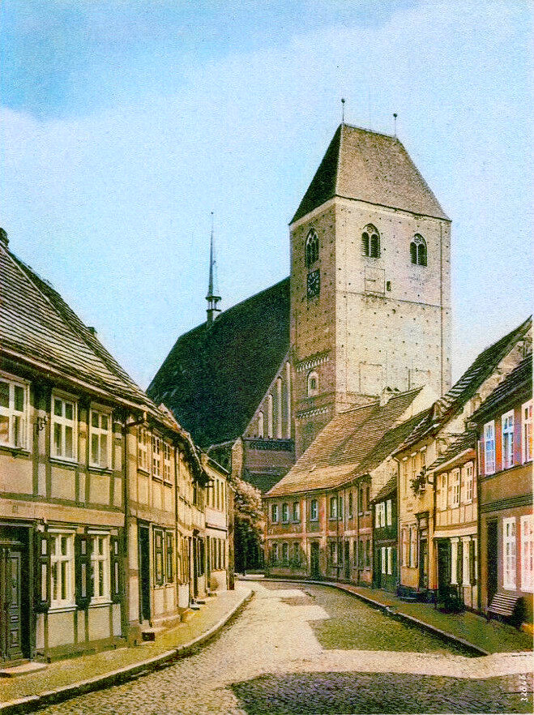
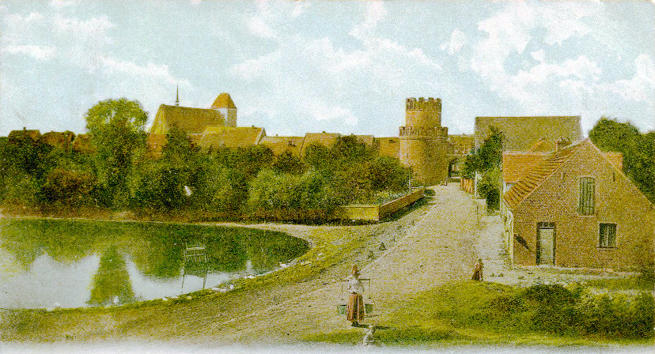
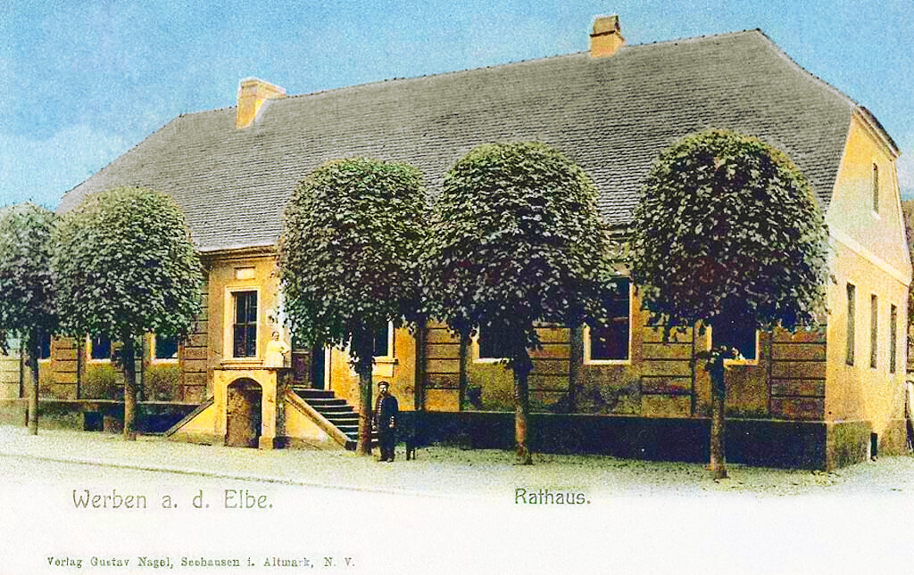
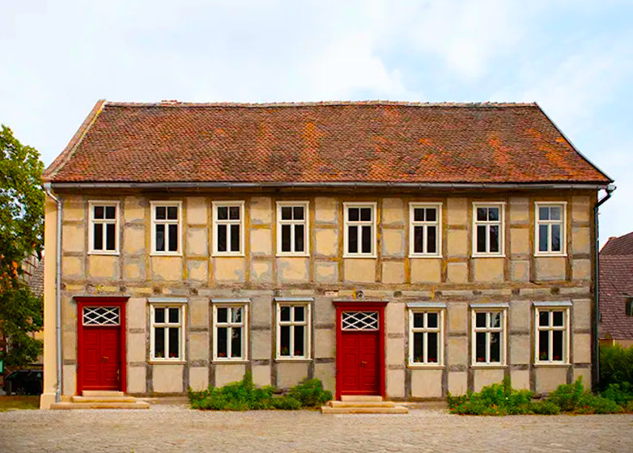
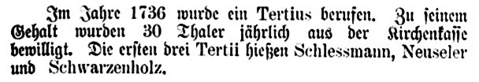
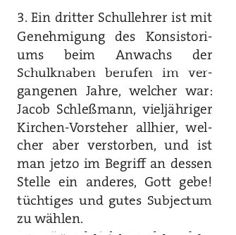

Werben
Wilkommen bei unserer Familie
- Nur wer die Vergangenheit kennt, hat eine Zukunft.
– Wilhelm von Humboldt
Peter Schleßmann und Anna Meyers
Die Vorfahren der Familie Schleßmann stammen aus der alten Mark Brandenburg. Die ersten bekannten Personen sind Peter Schleßmann und seine Frau Anna Meyers.Peter Schleßmann wurde wahrscheinlich etwa um 1605 geboren. Um das Jahr 1635, also mitten im Dreissigjährigen Krieg, heiratete er in Werben an der Elbe Anna Meyers. Nur wenige Jahre zuvor, am 7. August 1631, hatte die bekannte "Schlacht bei Werben" stattgefunden. Gustav Adolph von Schweden kämpfte gegen die Kaiserlichen Truppen unter Tilly, und da die Stadt Werben im Mittelpunkt des Gefechts stand, wurde sie von den Kanonenkugeln schwer beschädigt. Die Bewohner der Stadt mussten ausserdem die Soldaten beider Heere mit Nahrungsmitteln versorgen.
1636 und 1637 wütete dann die Pest in Werben und Umgebung, was die Bevölkerung weiter dezimierte. Die meisten Bauernhöfe waren verödet. Es dauerte lange, bis die Region sich wirtschaftlich wieder erholte. In dieser schwierigen Zeit wurde Peter Schleßmann der Besitzer des Einhofes in Wendemark, nur wenige Kilometer von Werben entfernt, und hatte mit seiner Frau Anna mindestens 10 Kinder. In der altmärkischen Wische - so heißt die Gegend - wurde vor allem Weizen von ausgezeichneter Qualität angebaut. Der Einhof hieß später auch "Wendemark I", vermutlich weil er der erste Hof war, der nach dem Krieg wieder einen Eigentümer fand.

Werben um 1644
Die Kinder von Peter und Anna waren:
- Elisabeth Schleßmann 1635–
- Markus Schleßmann 1642– verh., mindestens neun Kinder
- Katharina Schleßmann 1650– verh. 1671 mit Jochim Schröder
- Adelheid Schleßmann
- Anna Schleßmann
- Breke Schleßmann
- Heinrich Schleßmann
- Jacob Schleßmann –1713 verh., zwei Söhne
- Mette Schleßmann
Dorothea Neumann ihrerseits heiratete nach Peters Tod noch einmal in der Stadtkirche Havelberg. "10.08.1681 Meister Hans Biselstein, Bürger u. Hutmacher allhier mit Dorothea Neumann, Witwe des Peter Schleßmann, Ackermann Wendemark".
Peter Schleßmann starb demnach um 1680.
Peters Sohn Markus, geboren 1742, übernahm den Einhof. Der Name seiner Frau ist unbekannt, aber er hatte neun oder zehn Kinder, deren Namen und ungefähre Geburtsdaten bekannt sind, aber keine Sterbedaten.
Jacob Schleßmann I

Nur über Peters Sohn Jacob (um 1646-1713), den Vorfahren der Schleßmanns, existieren weitere Informationen.Das alte Rathaus, Werben
Am 1. November 1671 heiratete er Margarethe Riepert, die die Tochter des Landsassen Heinrich Riepert zu Wendemark. Ihr gehörte die Hälfte des Rittergutes Wendemark II, genannt Engelshof. Die andere Hälfte gehörte ihrem Bruder Heidenreich Riepert.
Jacob wurde 1708 der Wirt des Ratskellers in Werben.
Seine Frau Margarete Riepert starb am 18. September 1720. Ihr Sterbeeintrag lautet: "Frau Margarete Riepert, seel. Herrn Jakob Schleßmannes nachgelassene Witwe, starb den 18. September und war den 21. des abends in der Stille in der Kirchen beygesetzet, nachdem sie vorher mit 3 Pulsen mit dem großen Geläute überläutet worden war".

Jacob Schleßmann II

Der Sohn von Jacob und Margarethe hiess ebenfalls Jacob. Er wurde etwa um 1672 geboren. Die alte Schule, Werben
Am 8. November 1711 heiratete er Margarethe Müller, die Tochter des Lehrers Georg Christoph Müller in Werben. Ihr Vater war von 1667-1689 Konrektor und später Rektor an der Werbener Schule.
Im Heiratseintrag von 1711 heisst es: "Herr Jacob Schleßmann, Bürger und Kornhändler allhier, Herrn Jacob Schleßmann's Bürgers und Königlichen privilegierten Gastwirts hierselbst ehelichen Sohn und Jungfrau Margarete Müllers, Herrn Georg Christoph Müllers, Rektor der hiesigen Schulen hinterlassene jüngste Tochter, am 23. trin. prima vice, am Tage Catharinen vertrauet". Der Hochzeitstag von Jacob und Margarethe war auch der Tag der Uraufführung von Georg Philipp Telemanns Cantata "Gebet dem Kaiser was des Kaisers ist".
Jakob Schleßmann war Bierbrauer, Ratskellerwirt, Kornhändler, Kirchenvorsteher und 3. Lehrer an der Knabenschule.

1736 Schlessmann Lehrer an Schule Altmark Jahresberichte Seite 79

1773 Jacob Schlessmann Lehrer
Seine Frau Margarethe starb am 26. Mai 1733.
Im Kirchenbuch steht: "Frau Margarete Müllerin, Herrn Jakob Schleßmanns, Kirchenvorstehers und Gastwirts Ehefrau, ward mit großem Geläute in 3 Pulsen am 3.Pfingst Feiertage des abends in der Stille begraben."
Jacob Schleßmann überlebte sein Frau nur um fünf Jahre. Er starb am 12. März 1737.
"Herr Jakob Schleßmann, vieljähriger Kirchenvorsteher, gewesener Gastwirt und zuletzt tertius.collega scholae huius, ward den 12. Marty nach vorgängigem großen Geläute in 3 Pulsen, des abends mit einer parentation begraben."
Der 1721 geborene Sohn von Jacob und Margarethe, Johann Christoph, verliess als junger Mann seine Brandenburgische Heimat und erreichte um das Jahr 1750 Neunkirchen im Saarland. Er ist der Vorfahre der Neunkircher Schleßmanns.
Our Family Tree - back four generations


{kind=link}
{kind=link}
{kind=link}
{kind=link}
{kind=link}
{kind=link}
{kind=link}
{kind=link}
Über uns
Lorem ipsem dolor.Curabitur lobortis molestie tellus ac ultricies.